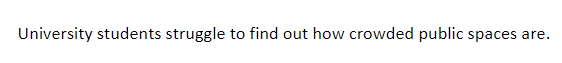
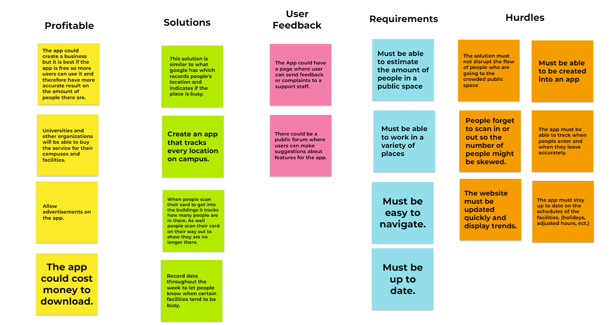

<!DOCTYPEhtml>
<html>
  <head>
    <title>CSCE 190:[Daniel Fitzpatrick]</title>
  </head>
</html>
<body>
  <h1>[Daniel Fitzpatrick]</h1>
  <!DOCTYPEhtml>
<html>
  <head>
    <title>CSCE 190:Daniel Fitzpatrick</title>
  </head>
</html>
<body>
  <h1>Daniel Fitzpatrick</h1>
  <section class="assign">
    
    <section class="assign-det">
    <h2>Problem statement: Crowded university areas</h2>
    <p>
      University students do not know how crowded public spaces are.
    </p>
    </section>
  </section>
<!-- Affinity diagram assignment -->
<section class="assign">
  
  <section class="assign-det">
    <a href="files/affinity-diagram.pdf"><h2>Affinity diagram: [Crowded University Areas Jamboard]</h2></a>
    <p>
      A Jamboard Affinity Diagram disucussing solutions for figuring out a way for university students to be able to know how busy a facility is.
    </p>
  </section>
</section>


</body>

</body>
